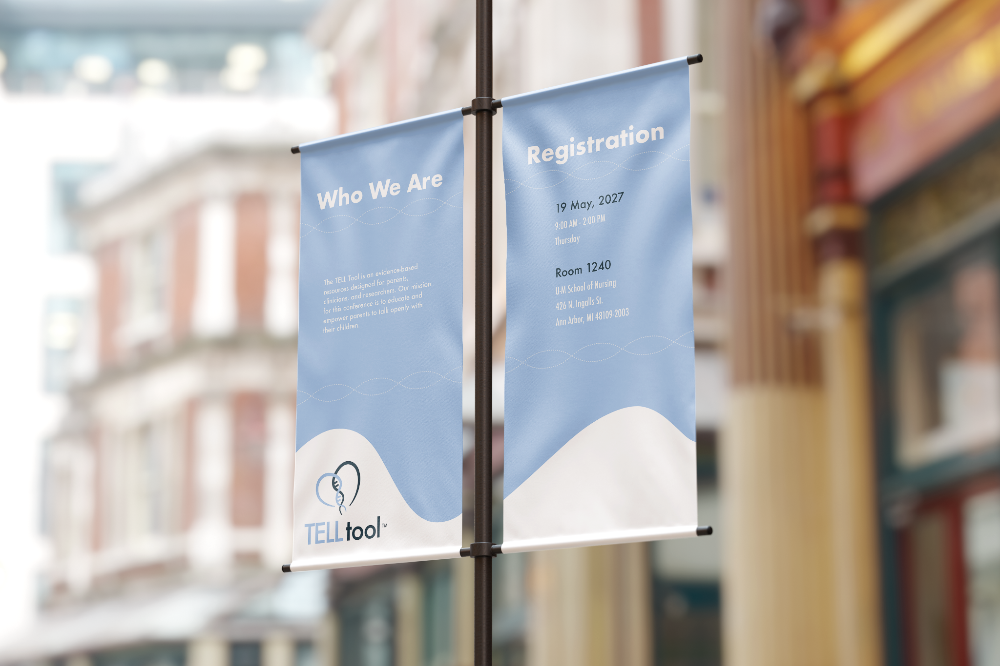
The Problem
How do you design a brand that serves single parents, LGBTQ+ families, multicultural households, and healthcare professionals without alienating any of them?
The Solution
A symbol-driven identity built on abstraction over representation, using geometry and negative space to suggest connection and biology without encoding any single family structure.
TL;DR
Brand identity for a University of Michigan research initiative on donor conception disclosure
Challenge
Design a brand that feels warm and trustworthy across a radically diverse audience without excluding any family structure or appearing clinical.
Approach
Abstraction over representation with a DNA helix merged with a heart, expressed in geometry and negative space. No human figures, no implied family type.
Solution
A full identity system of logo, type, color, and 10+ touchpoints that functions across clinical posters, social media, and merchandise with equal clarity.
Impact
Praised by Dr. Hershberger's team for cross-cultural sensitivity and flexibility. Established a scalable foundation for multilingual and mobile expansion.
Key Design Decisions
Three choices that shaped every downstream visual decision.
01
Symbol over figure
Any human silhouette or family illustration would have implicitly represented one kind of family. An abstract DNA-heart mark makes no such assumption and speaks to biology and love without encoding a structure.
02
Warm neutrality in color
Soft blues and greys signal clinical credibility. Green and lavender accents introduce warmth without sentimentality. The palette had to be professional in conference settings and approachable on social media simultaneously.
03
System before application
Logo construction grids, spacing rules, and variation logic were defined before any mockup. This meant every deliverable, from tote bags to presentation slides, was pulled from the same visual source.
Three guiding principles emerged from audience research before a single sketch.
Research into the lived experiences of the TELL Tool's audience, including parents navigating emotional disclosures, children at different developmental stages, and clinical researchers, led directly to three brand principles:
Credibility for clinicians and researchers, without cold institutional distance.
Emotional accessibility for parents and children, without losing authority.
Serving a radically diverse audience without becoming so generic it says nothing.
From these principles, I focused on symbolic abstraction over human representation by avoiding any iconography that might unintentionally suggest a narrow idea of family.
DNA double helix merged with a heart, abstracted through geometric curves and negative space.
Early sketches explored multiple symbolic directions before landing on the DNA-heart synthesis. The mark needed to suggest both biological origins and emotional bonds while remaining gender- and structure-neutral.
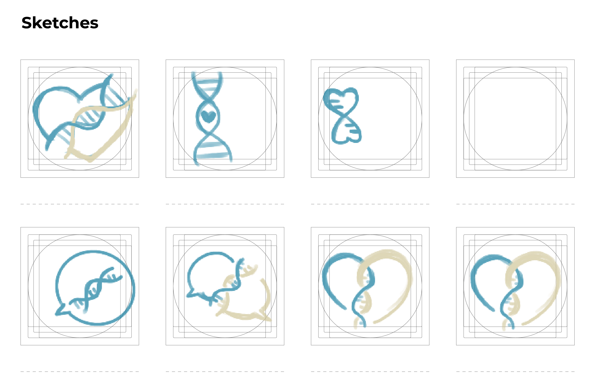
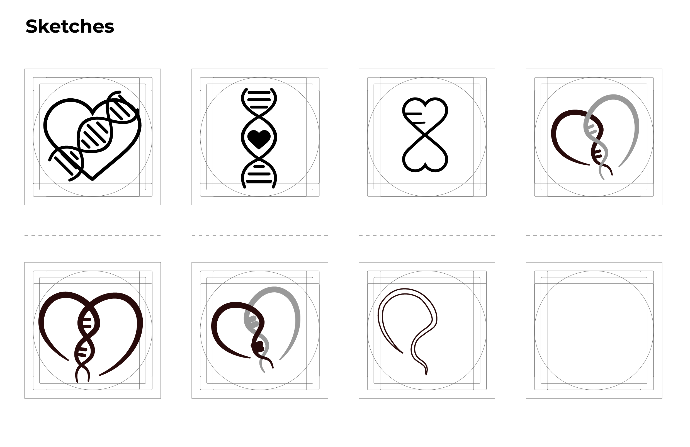
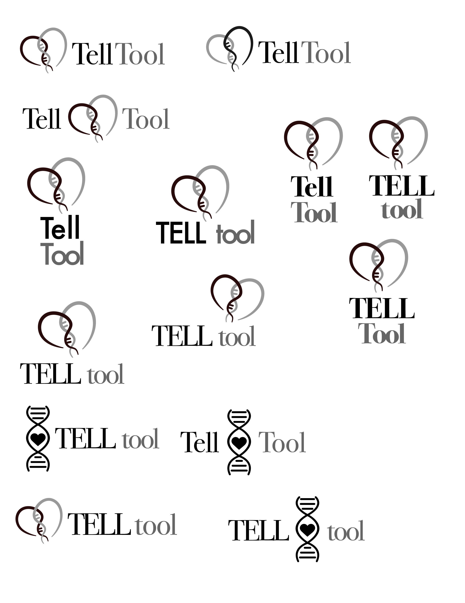
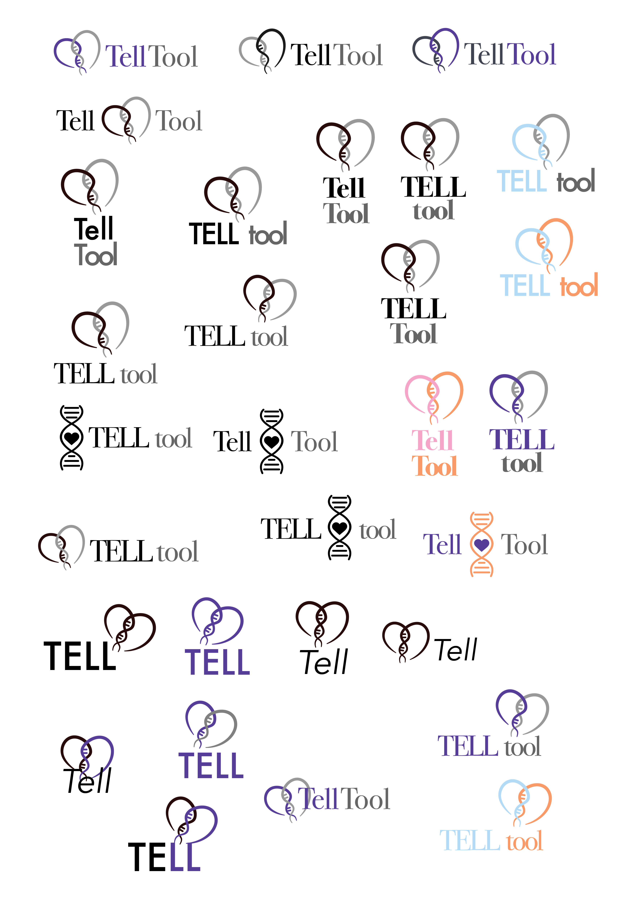
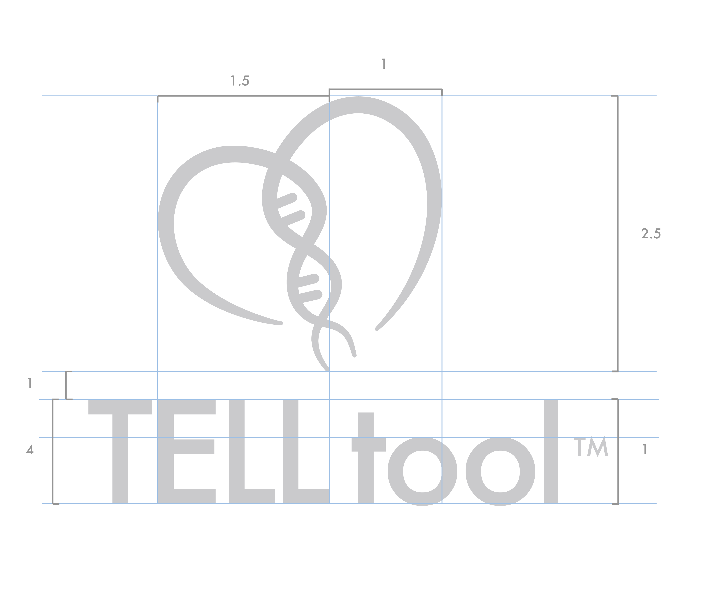
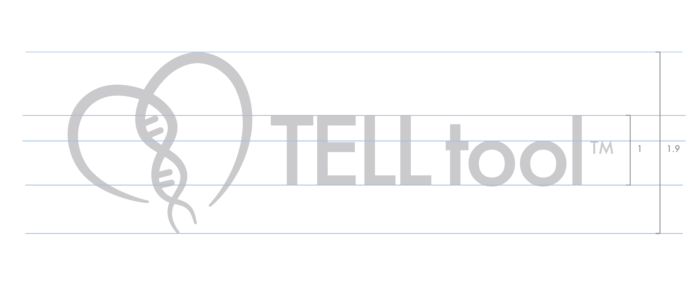
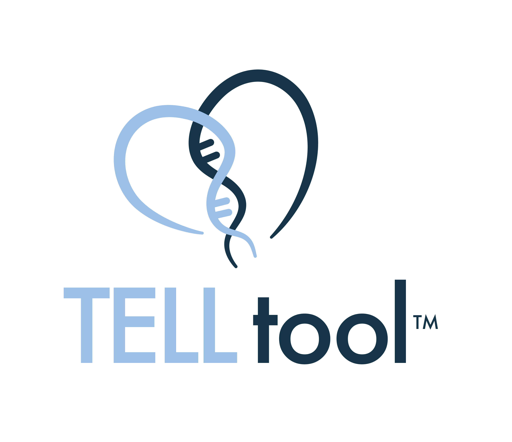
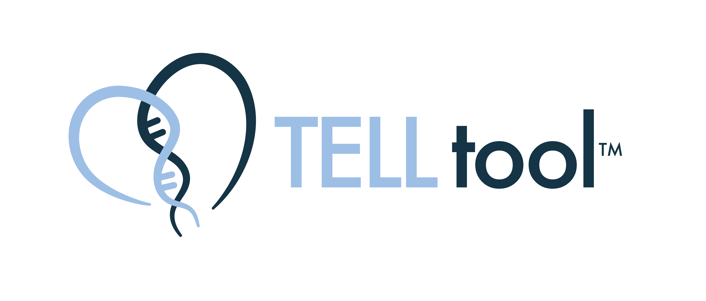
Type, color, and logo variations defined as a system before any application mockup.
Futura as a humanist geometric sans that reads modern and clear without feeling cold. Consistent across clinical and informal settings.
Soft blues and greys for scientific credibility. Green and lavender accents for warmth and emotional openness.
Vertical and horizontal lockups, standard and reversed, with construction grids and spacing rules for legibility at any scale.

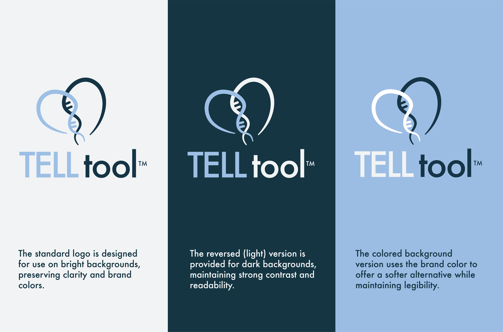
Every touchpoint pulls from the same visual system.
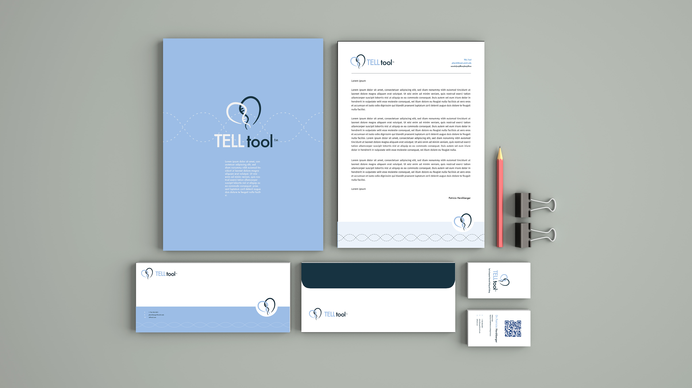
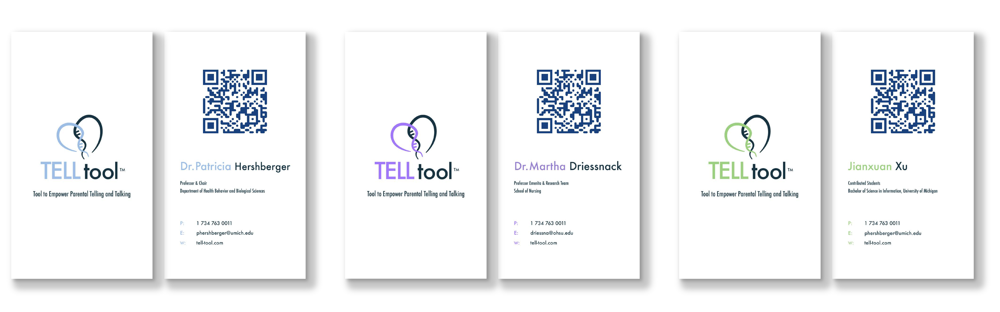


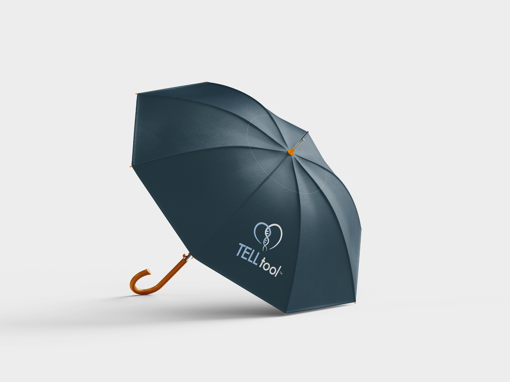


Defining construction grids and spacing rules before any mockup meant every deliverable pulled from the same source.
Next time I would test color pairings across more media contexts earlier.